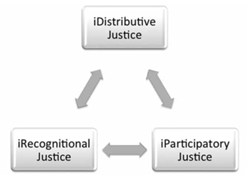
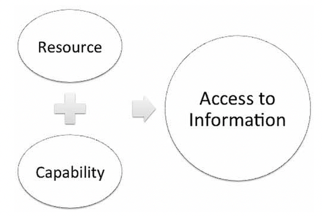

11 Information and equity, diversity, and inclusion
11.1 Learning objectives
This chapter explores what it means to have a socially just society and how LIS professionals can contribute. We discuss some different theories surrounding informational social justice, including the informational justice framework by Kay Mathiesen. It is essential to think critically about these issues and consider how you, as an information professional, can work to make society more socially just through your everyday actions.
11.2 The informational justice framework
Kay Mathiesen (2015) defines a socially just society as one in which everyone is given equal opportunities and all groups are treated equally and fairly. She proposes an informational justice framework that includes three components:
iDistributive justice: To be treated justly as seekers, people should have equal access to information.
iParticipatory justice: To be treated justly as sources, all people should have an equal chance to contribute to information and knowledge. Everyone’s opinions and points of view should be considered, and everyone should have equal rights to contribute to decision-making about information resources.
iRecognitional justice: information should have fair representations of people and society.

Source: (Mathiesen 2015)
Let us now consider these three components in a little more detail.
11.2.1 Distribution
In her article, Mathiesen (2015) considers three distribution theories and their relevance to the information perspective. The first is the equal distribution of personal satisfaction, according to which pleasure, satisfaction, and happiness are the goods that need to be distributed equally between people. From this perspective, we should strive to provide information to people in a way that satisfies their needs and expectations. One issue is that people adjust their expectations based on their experiences and environments, so applying this model may reinforce inequalities by giving more to those who need more by having more and less to those who need less by having less. Another way to think of justice is to consider the equal distribution of resources, with information being the resource we would consider in the field. The problem with this approach is that two people with the same amount of information may not benefit from it. In a library where everyone has access to the same resources, some patrons may not be able to use these resources to the same extent as others. For example, a visually impaired person requires assistive devices to access the resources. Finally, the equal distribution of capabilities approach focuses on a person’s capabilities instead of their resources. These capabilities can be as simple as moving about, meeting one’s nutritional needs or acquiring clothing and shelter. So here, we might think of how the distribution of information provides everyone with the same level of capabilities.
When Ontario locked down due to COVID-19 and sent all students home to attend school virtually, there was a massive disconnect between students with access to the internet and technologies. This was a clear case of a digital divide preventing certain parts of society from access to information. The Ontario government began an initiative to distribute 21,000 iPads and accessible data for school-aged children (ages 4-18). In this case, internet access, and in turn access to information, is considered a human right. Although this was a great initiative, there were downfalls, the main one being that with over two million students enrolled in Ontario schools, only 1% were provided with iPads. This is when 14% of Ontario households were deemed to have slow or no internet connectivity. One must question whether distributive justice was achieved (Smith 2021).
For Mathiesen (2015), the field needs to focus on access, which she sees as a combination of resources (the information) and capabilities (to use the information).

Thinking about access this way provides us with two main areas of intervention to make information more accessible: acting on the information itself or acting on the users or potential users. Here are five factors that can help to determine whether information is accessible to a particular group or person.
Availability: does the information exist?
Findability: can the information be found?
Reachability: can the seekers get the information?
Comprehensibility: can the information be understood?
Usability: is the information useful?
- Can you consider other factors that information managers can consider to make information accessible?
- How can we improve access to information by focusing on the users or potential users of information?
- How can information be intellectually comprehensible but not physically comprehensible, and vice versa?
- How can findability, availability and reachability issues affect unhoused and poor populations?
11.2.2 Participation
The participation element of Mathiesen’s informational justice framework is related to the concept of participatory justice, which “refers to the direct participation of those affected most by a particular decision, in the decision-making process itself: this could refer to decisions made in a court of law or by policymakers” (Wikipedia). In the realm of information, participatory justice thus refers to the equal opportunity for people to participate in producing and disseminating information.
In the pre-digital world, the means of producing and disseminating information were concentrated by media organizations and governments. Now, the Internet and social media have levelled the playing field so that anyone can have a voice and participate equally in producing and disseminating information.
What do you think of this statement? In what ways do you think it is accurate or not true?
Why do you think having equal access to producing and disseminating information matters?
11.2.3 Recognition
The recognition part of the informational justice framework emphasizes the importance of respecting identities and cultural differences. To help you think of recognitional justice from an information lens, consider how negative stereotypes about certain groups or cultures can be spread and reinforced in the news and social media through informational processes. You may also find helpful to replace the term recognition with representation and think of recognition justice as the right for all people to be fairly represented in the informational world. This idea celebrates the plurality of perspectives that are constructed through discourse and that are to be considered equal, as opposed to the idea of a single objective truth for us to know or the existence of “grand narratives” that represent the dominant perspective on the world and its history.
The Truth and Reconciliation Commission of Canada is a good example of an attempt to deconstruct a grand narrative about Canada’s history and establish a “new history” of the country that better represents the lived experiences and perspectives of Indigenous Peoples.
Mathiesen (2015) emphasizes the interdependence of distributive, participatory, and recognitional justice.
How does distributive justice relate to participatory justice?
How does participatory justice relate to recognitional justice?
How does distributive justice relate to recognitional justice?
How do you think the three components of the framework come into play in the Truth and Reconciliation process?
11.3 Informational Justice in Museums
Museums are, traditionally, physical locations that serve a community by collecting, preserving, and presenting cultural heritage objects. However, museum institutions often come out of colonial contexts. When considering informational justice in the museum sector, those colonial pasts (and presents) must be examined and understood to pave the way for a future where the information and objects that museums manage exemplify justice, not bastions of inequality.
The collections of cultural heritage objects in many Canadian and international museums are made up of objects removed from their cultures and places of origin through dubious means or without consent. The provenance of these items is sometimes hotly debated, and many institutions are repatriating objects to their places/cultures of origin to reflect modern mandates that support informational justice and equality.
As information managers, we can also be critical of the information surrounding cultural heritage objects inside museum spaces. For example, many Canadian institutions displayed indigenous cultural heritage objects alongside information that suggested the cultures of origin were extinct when, in reality, many indigenous cultures are alive, resilient, and thriving in the present day. Many exhibits are curated to display certain cultures as foreign, and these exhibits are often curated without the input of people relevant to those objects.
How does this relate to Mathieson’s Informational Justice Framework?
Consider the following quotation from writer, poet, and community organizer Jamara Wakefield:
Museums could be one of our greatest allies in liberation struggles. They have the physical space, the means, and the public confidence to partake in a large-scale social movement against colonial powers. Yet they reject this opportunity over and over again. They prefer to remain silent and hide in a world desperately needing decolonizing. (Wakefield 2019)
Mike Murawski, author of Museums as Agents of Change, wrote the following on how colonial culture affects many aspects of museums:
It dictates how people hold meetings together, who is invited to those meetings, who participates, and whose ideas are valued. It dictates decision-making in museum spaces. It controls how we define “community,” how we work with community partners and what we value about those partners. White dominant culture dictates the words that get written on museum websites and on the panels and labels in the galleries, who gets to write, edit, and approve those words. (Murawski 2021)
Murawski (2021) wrote the following points on Identifying and Replacing White Dominant Culture In Museums:
Move from professional and transactional relationships to relationships based on trust, care, and shared commitments.
Move from protecting power to sharing power.
Move from a culture of overworking to a culture of self-care and community care.
Move from competition and struggle for limited resources to a mindset of collaboration and working to share resources.
Move away from prioritizing only degrees, work experience, and job titles toward recognizing and centering lived experience.
Move from a place of those with power making decisions for others toward a place where we work to include those affected by decisions in the decision-making process.
11.4 Case study
Tracy, in Halifax for a conference, meets with Jude for a coffee to talk about Ava’s experience with bullying and online harassment. They discuss ways to address epistemic injustice and digital divides as Tracy contemplates moving their family to the States.
Tracy: Hey Jude, how have you been, old friend?
Jude: Hi Tracy! It’s so lovely to see you! It’s been a few weeks since we’ve been able to catch up. I’ve just been buried deep in the Archives, as usual. Honestly, that whole situation with the podcaster made me step back from my side projects so I could think deeply about everything. I might take a break from my blog for a bit. How about you- how are you and Ava doing?
Tracy: I’ve been good. I am very busy with Ava, as usual. My partner has been back in the Netherlands looking after his parents for the last few months, so there’s been a lot on my plate since I’m essentially acting as a single parent.
Jude: That sounds like a lot. How has Ava’s experience at school been since she and her girlfriend went public?
Tracy: Over the past few weeks, the buzz around the school has petered off, but they are still receiving hateful messages online. We’ve been having many conversations lately about boundaries with social media and ways they can manage their mental health. I tell Ava not to read the messages she receives, but I know they significantly impact her whether she reads them through or not. Delete and block, I say!
Jude: I am sorry to hear that. That is good advice- there is nothing to be gained by reading those messages.
Tracy: I agree. However, Ava has voiced that she wants to converse with them and present a different perspective. She is a lot like you in some ways, Jude. She wants to do good and provide people with information.
Jude: Well, she will be much better at it than I am. I think my days of social justice blogging are behind me. I feel terrible that I helped out that podcaster, and I think I need some time off. I’m sorry I made it possible for them to speak their message. I guess it’s more painful now that I’m realizing how it affected my friends and their families.
Tracy: Oh, but Jude, you didn’t know what he was putting out there- and your blog before was so well-received. It was educational, and I know it inspired its readers to take positive action! Think of all the great comments you used to get!
Jude: That is generous of you, Tracy. Over the past few weeks, I’ve thought that many of my readers also came from places of privilege, and I wasn’t reaching the people I wanted to reach. My readership- they have technology, they’re educated. Ava inspires me; how do you reach those who don’t have access to the same perspectives or resources? How do you introduce people to different ways of knowing and doing?
Tracy: That’s a good point, Jude. Epistemic injustice runs deep and is built into online structures just as it exists in the physical institutions and places we inhabit. It can be even harder to spot online because it is intangible, and the internet is so interconnected. Information is changed and influenced on all sides. Users are creators, authors, and audiences all at once. Ava’s school has a class on digital literacy where they discuss these themes. Their end-of-term project is coming up, and we have been talking about them quite a bit- especially in light of recent events!
Jude: Has Ava ever considered starting her podcast? It would be an excellent idea for her and her classmates to discuss these things openly and make them available for their peers and teachers to listen to. It might help engage them all in conversation on these topics, and as a new class begins each year, they could have multiple seasons!
Tracy: What a fascinating idea, Jude! See- we can’t keep you from trying to help others! While I think that has real potential, I am not sure Ava’s school has the technological infrastructure to support an initiative like that. The digital divide is quite poignant in our town- the schoolboard doesn’t have the resources to keep up with advancing technical change. Their school only got open Wi-Fi last year!
Jude: Hmm… well… now that my podcasting days are behind me, I’d like to redirect that effort somewhere that is needed. I have a ton of equipment in my studio, and I’d be happy to gift it to Ava’s school to get a project like this off the ground. I could even teach a few workshops on using the equipment and set them up with essential software to record episodes.
Tracy: I’m sure they would be happy to hear from you- why don’t I see if I can put you in touch? It’s great to have the old Jude back; this sounds more like him! Ok, Jude - stay out of trouble. Thanks for meeting me here at the hotel for a coffee. I’d better check on Ava and then wrap up the conference. We’re taking a red eye out of here tonight. I’ll see you in Canmore?
Jude: Good to see you, Tracy. Thanks for chatting. Yes, I’ll be in Canmore - I’m excited to get everyone together again!
Many changes are on the horizon for each character, and with the fifth anniversary of their time at Dalhousie, they’ve decided to come together in Canmore, Alberta, for a celebratory trip. The four of them are out for a nice dinner on a patio overlooking the mountains, discussing their plans.
Dante: Thank you so much for planning this trip, Tracy! I’m so happy to have a relaxing vacation before my big move. I’m glad we chose a convenient location; the drive from Saskatoon wasn’t too bad.
Tracy: I’m so happy it worked out! It’s been a while since all four of us have been together, and this seemed like the perfect opportunity. I’m glad we were all able to get vacation time set aside.
Jude: This was the perfect idea. The mountains are so gorgeous, and some outdoor therapy can never hurt.
Wren: So true! Tell us about your new job, Dante! We’re all so proud of you; this is such a big move for you.
Dante: Well, as you know, I’ll be working as the Chief Librarian at Iqaluit Centennial Library in Nunavut. My dream’s always been to run a library, so I’m super excited about this new chapter. There’s so much I want to do there, but the number one thing I want to accomplish is closing the digital divide. There are so many access issues in Northern Canada. I want to create programming to teach children about digital literacy and help them through issues they may be dealing with, like online bullying.
Wren: Dante, that is so lovely! That sounds like the perfect job for you. Tracy, how are things with your job?
Tracy: There have been some significant changes in my company. They’ve hired a Black female CEO recently, and so many positive changes have already occurred. I’m looking forward to seeing what new ways the company will work to promote equity. And you, Wren? You’re still at the same job.
Wren: I am! I’ve been there for about five years now, which seems crazy! Things are pretty steady at work, but a few months ago, I started a non-profit organization that helps to provide internships and mentorship for women in tech. I’m so excited to be able to help a new generation of women find their passion in this field. What about you, Jude? Is anything exciting happening at the archives?
Jude: That’s inspiring, Wren; you will make a difference for many young women. We just received a large grant from the government to work towards truth and reconciliation. I’m excited to work with the local Indigenous communities to find a way to improve the archives. On a similar note, I’m also consulting for Dante in establishing digital literacy programming. The podcasting initiative at Ava’s school was so successful and in demand from the students that the school was given a large grant by the province to set up more technical infrastructure. Donations from readers on my blog didn’t hurt either. We will draw from our experiences setting up that programming to address access issues in Iqaluit.
Dante: Looks like things are going well all around. It’s been a crazy few years, but I’m glad we all met! Cheers to many more years!
[Glasses clink together in a sunlit shot with the mountains in the background in a Polaroid-perfect moment.]
11.5 Discussion Questions
How do you interpret Knowledge versus Information justice? What are a few examples of this you can think of?
Have you experienced digital divides in your own life? What digital divides can you identify in your community? In your province? In Canada? Across the globe? Can you identify any possible solutions for closing these divides?
How do digital divides create unequal footing regarding information literacy and access to information?
What sort of digital divides exist in rural areas and urban centres? What sort of divides exist between them?
Consider how digital divides in Canada occur systemically, especially regarding Indigenous communities.
Relate the case study to Mathiesen’s Informational Justice Framework, including distributive justice, participatory justice, and recognitional justice.
Reflect on what you have learned throughout the last semester and think through the course themes.